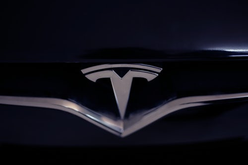
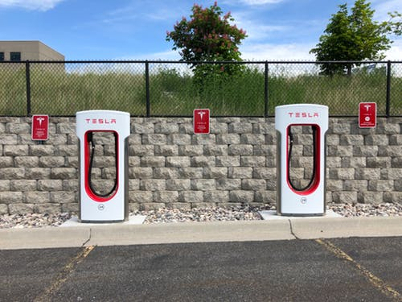

Author: Khutso Nkadimeng
22 Apr 2020
I will conclude this series based loosely on the Gestalt Laws of Grouping.
To appreciate the impact of Tesla on its users you might want to check its advertising budget: the company spends zero dollars on paid advertising, the drivers are doing that free of charge. The products were designed with the user in mind, from buying the car to parking it in their garages.
Good Cause
Consumer trends change all the time and global warming is one of the major discussions of our time. Tesla is leveraging this by giving its customers a feeling of not only driving a good car but also saving the planet.
Buying

Traditional carmakers have dealerships and that's where people face very insisting salesmen. This is also how car makers make profits through parts and service. Tesla cars do not need an oil change or thousands of parts, so a dealership is not necessary. Customers buy online like they do an iPhone and the car. This is very convenient and economical.
Autopilot
Tesla has one of the most advanced driver assistance systems and drivers have found many uses for it. One couple made a porn video in a self-driving Tesla and Elon Musk responded to it in a tweet “Turns out there’s more ways to use Autopilot than we imagined”. Come on Musk!
Charging Network
The reason people don't worry about driving a car with an empty tank is that there is a petrol station on the nearby corner. You would not take chance with a battery car, so Tesla had to build a countrywide charging network to simplify long-distance trips for its drivers.
All these factors combined, and many others make up the Tesla user experience. I believe with a better understanding UX, Tesla will make a good case study.
References
1. Laws Of UX